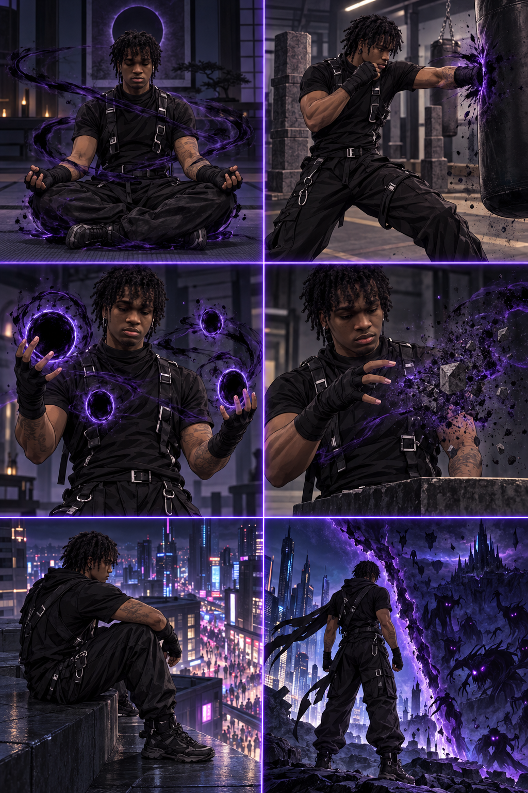

A Voider lives a quiet and mysterious life, spending most of the day training to control the dangerous energy within them. Their daily routine includes meditation, physical combat, opening small portals, and practicing how to erase objects without losing control. They usually avoid crowded places because strong emotions can awaken the Void. At night, they patrol the boundary between worlds, protecting humanity from creatures that escape from the darkness.
